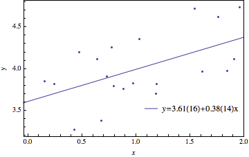

Mikhail Gaerlan
28 October 2015
Linear least-square fitting
$\displaystyle{A _{i1} = \frac{1}{\sigma},\;A _{i2} = \frac{x _i}{\sigma},\;b _i = \frac{y _i}{\sigma}}$
$\alpha=A^TA,\;\beta=A^Tb$
$a = \alpha^{-1}\beta$
$c = \alpha^{-1},\;\sigma _{a _1} = c _{1,1},\;\sigma _{a _2} = c _{2,2}$

The parameters calculated by the method in class matches the parameters given by Mathematica. However, the uncertainties calculated slightly differ but are within the same order of magnitude.